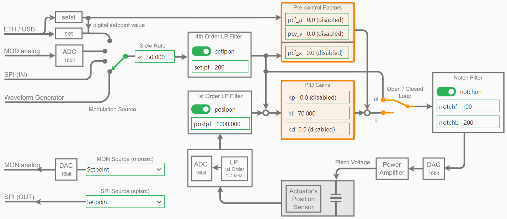
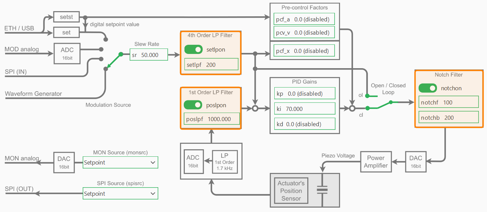

PID Controller and Filters
Overview
The NV200 device supports PID control and various filters to manage the movement of the device. The following sections describe how to configure the PID controller and the filters.
PID Controller Parameters
The following image shows the block diagram of the device with the PID parts highlighted:
PID Control Mode
The PID-controller can work in two different modes: The open loop mode (OL) and the closed loop mode (CL).
To change the parameters of the PID controller, you can simply access the NV200Device.pid attribute
of type NV200Device.PIDController.
The following example shows how to switch the PID control mode between open loop and closed loop:
device = await connect_to_single_device(NV200Device, TransportType.SERIAL)
# Toggle the PID control mode between open loop and closed loop
pid = device.pid
await pid.set_mode(PidLoopMode.OPEN_LOOP)
await pid.set_mode(PidLoopMode.CLOSED_LOOP)
await pid.set_closed_loop(True)
await pid.set_closed_loop(False)
In open loop mode the PID-controller is bridged and the command input directly controls the amplifier,
which can provide a voltage between -20 V and +180 V, however, limited to the admissible voltage range
of the connected piezo actuator. The resulting piezo stroke then depends on the characteristic of the
piezo actuator and is affected by piezo-typical creeping and hysteresis behavior. If you would like
to position the piezo actuator in open loop mode, you can use the move_to_voltage function.
This function switches the PID controller to open loop mode and sends the desired voltage command.
await device.move_to_voltage(100.0) # Move to 100 V in open loop mode
In closed loop mode (CL), these effects will be compensated by the digital loop controller.
The position sensor value can also be filtered with an adjustable 1st order low pass filter in
order to reduce the measurement noise spectrum. To position the piezo actuator in closed loop mode,
you can use the move_to_position function. This function switches the PID controller to closed loop mode
and sends the desired position command.
await device.move_to_position(80.0) # Move to 10 µm in closed loop mode
PID Gains
The controller-specific parameters are stored in the actuator’s ID-chip. The default parameters were determined in the piezosystem jena laboratory and ensure safe function of the actuator and will work for most applications. Depending on your application, additional load, setpoint trajectory and motion requirements, fine tuning of the control parameters will most likely improve your results.
Warning
Always export and save the actuator configuration before writing or experimenting with actuator parameters (see Actuator Configuration Backup).
After accessing the PID controller via the device interface, you can modify the PID gains as follows:
device = await connect_to_single_device(NV200Device, TransportType.SERIAL)
# Access the pid object via the device interface
pid = device.pid
# set single PID gains
await pid.set_pid_gains(ki=70)
await pid.set_pid_gains(kp=0.1)
# set all PID gains at once
await pid.set_pid_gains(kp=0.0, ki=70, kd=0.0)
# Read back the PID gains
print(f"PID gains: {await pid.get_pid_gains()}")
To adapt the controller properties to your special application please start with the default values. In general, change the parameters in small steps and, depending on the actuator’s reaction, slightly increase the step size. If the system begins to oscillate, switch to open loop mode immediately, then reset to stable values again.
Slew Rate
For filtering the set point, a slew rate limiter is implemented, which can be changed via the set_slew_rate function.
The slew rate is defined in %/ms.
device.set_slew_rate(10) # Set slew rate to 10 %/ms
print(f"Slew rate: {await device.get_slew_rate()} %/ms")
For example, a value of 1 %/ms yields that a jump off the full motion range (100 %) is converted into a ramp with 100 ms duration. Independent from the slew rate value set in the controller, the limitation given by the high voltage amplifier cannot be exceeded, since the piezo voltage slew rate is limited by the amplifiers maximum output current and the actuators capacity.
Filters
As shown in the control block diagram, the NV200 device includes several configurable filters to improve system stability and performance:
A 1st-order low-pass filter on the position sensor input
A 4th-order low-pass filter on the setpoint input
A notch filter applied to the control output
These filters can be accessed and configured individually through the device interface.
Setpoint Low-Pass Filter
The setpoint low-pass filter (setpoint_lpf) smooths the commanded input signal to avoid abrupt changes and reduce noise:
slpf = device.setpoint_lpf
await slpf.set_cutoff(200) # Set cutoff frequency to 200 Hz
await slpf.enable(False) # Disable the setpoint low-pass filter
print(f"Setpoint LPF Cutoff Frequency: {await slpf.get_cutoff()} Hz")
Position Low-Pass Filter
The position low-pass filter (position_lpf) filters noise from the position sensor before it enters the control loop:
plpf = device.position_lpf
await plpf.set_cutoff(1000) # Set cutoff frequency to 1000 Hz
await plpf.enable(True) # Enable the position low-pass filter
print(f"Position LPF Cutoff Frequency: {await plpf.get_cutoff()} Hz")
Notch Filter
The notch filter (notch_filter) is used to suppress specific resonant frequencies in the system, often caused by
mechanical resonances. It is defined by its center frequency and bandwidth:
nf = device.notch_filter
await nf.set_bandwidth(200) # Set notch filter bandwidth to 200 Hz
await nf.set_frequency(100) # Set notch filter center frequency to 100 Hz
Note
Filters can be enabled or disabled independently and should be tuned according to the dynamics and noise characteristics of your system.